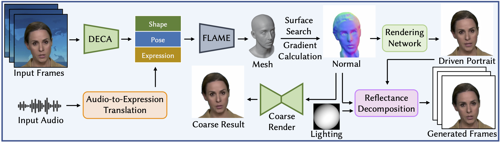
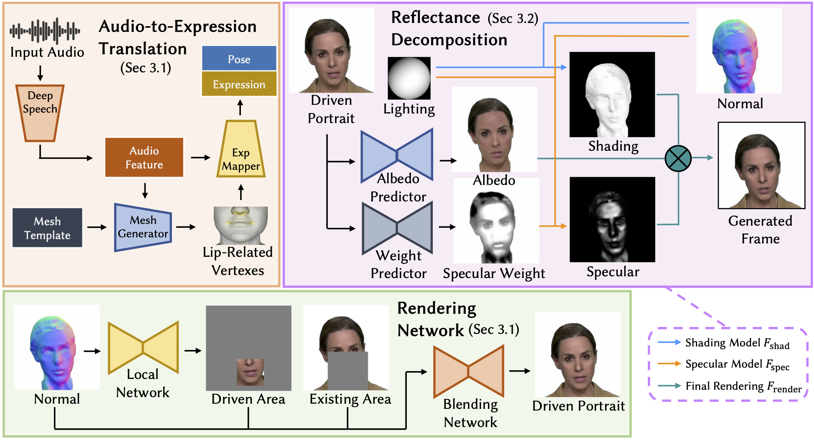

ReliTalk: Relightable Talking Portrait Generation from a Single Video

Recent years have witnessed great progress in creating vivid audio-driven portraits from monocular videos. However, how to seamlessly adapt the created video avatars to other scenarios with different backgrounds and lighting conditions remains unsolved. On the other hand, existing relighting studies mostly rely on dynamically lighted or multi-view data, which are too expensive for creating video portraits. To bridge this gap, we propose ReliTalk, a novel framework for relightable audio-driven talking portrait generation from monocular videos. Our key insight is to decompose the portrait's reflectance from implicitly learned audio-driven facial normals and images. Specifically, we involve 3D facial priors derived from audio features to predict delicate normal maps through implicit functions. These initially predicted normals then take a crucial part in reflectance decomposition by dynamically estimating the lighting condition of the given video. Moreover, the stereoscopic face representation is refined using the identity-consistent loss under simulated multiple lighting conditions, addressing the ill-posed problem caused by limited views available from a single monocular video. Extensive experiments validate the superiority of our proposed framework on both real and synthetic datasets.
Overview of our proposed framework. Our aim is to extract the geometry and reflectance information from a single video in an unsupervised manner then drive the geometry deformation according to the audio.
Details of our proposed framework. Our framework decomposes the video into a set of normal, albedo, shading, and specular maps. Specifically, we neurally model the expression- and pose-related geometry of human heads based on the FLAME model. Then, the reflectance components are decomposed via multiple carefully designed priors. With the well-disentangled geometry and reflectance, we use audio from the user to drive the human portrait by controlling expression and pose coefficients, then render it with any desired illuminations, which seamlessly harmonizes with the background.
Relighting with rotated single lighting source.
Relightable audio-driven talking portrait generation.
Relighting under directional lights.
Relighting under color lights for HDR environment maps.
Audio-driven portrait generation.
Relightable audio-driven talking portrait generation.
misc{qiu2023relitalk,
title={ReliTalk: Relightable Talking Portrait Generation from a Single Video},
author={Haonan Qiu and Zhaoxi Chen and Yuming Jiang and Hang Zhou and Xiangyu Fan and Lei Yang and Wayne Wu and Ziwei Liu},
year={2023},
eprint={2309.02434},
archivePrefix={arXiv},
primaryClass={cs.CV}
}
Acknowledgements: The website template is borrowed from DreamBooth.